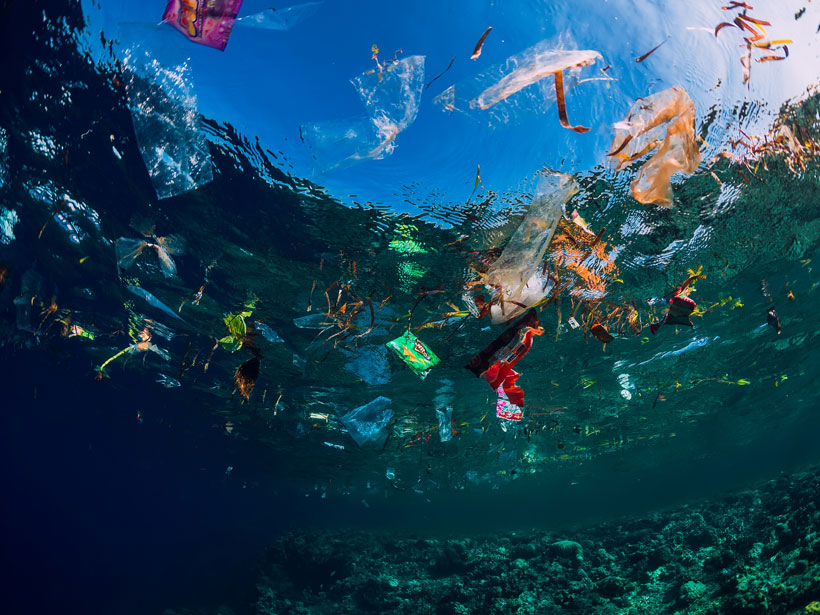
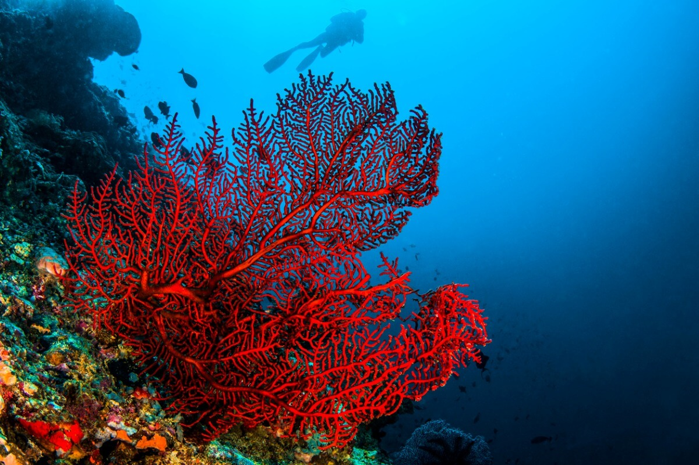
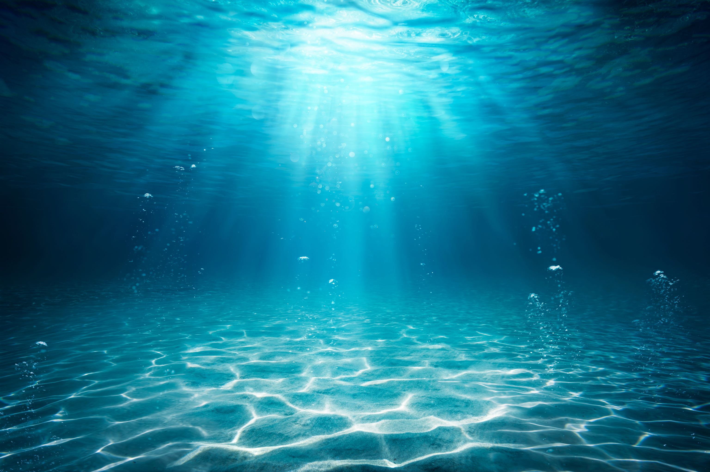
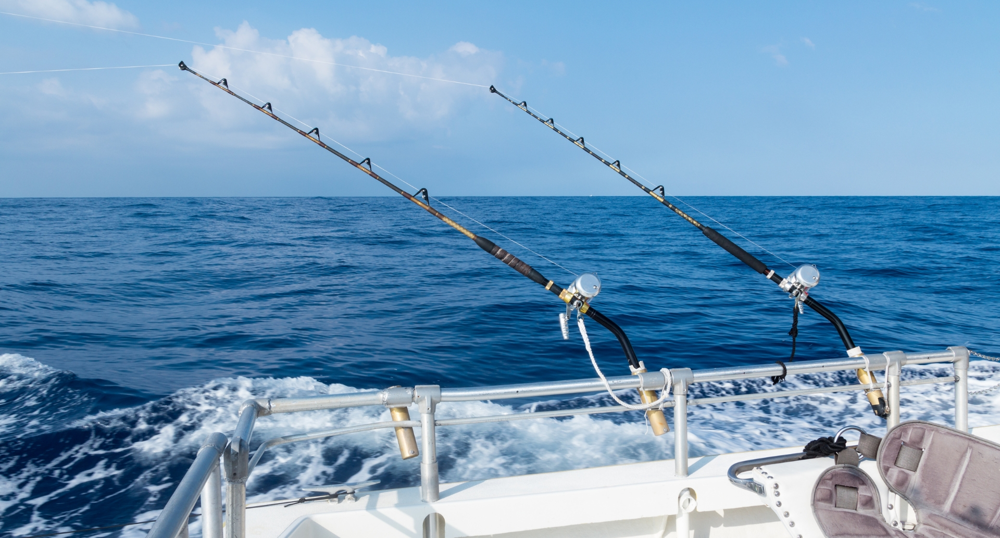
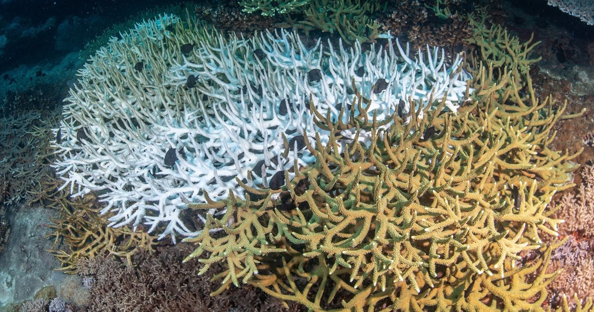
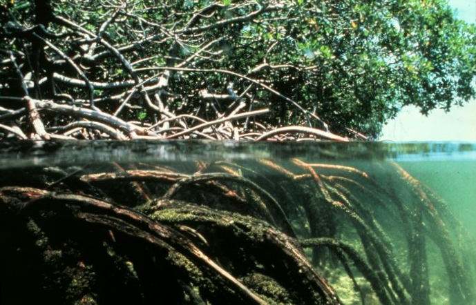
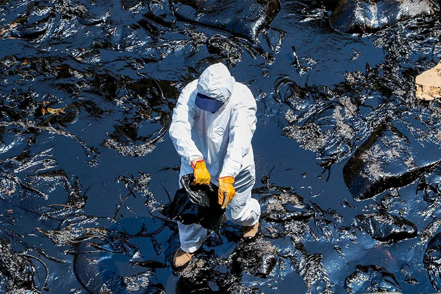

Contaminación plástica
Cada año ingresan al océano más de 8 millones de toneladas de plástico, afectando a más de 800 especies marinas y contaminando la cadena alimentaria.
Saber másEl ODS 14 busca conservar y utilizar de manera sostenible los océanos, mares y recursos marinos para contribuir al desarrollo sostenible global.
Recibí información para proteger los océanos.

La sobrepesca y la contaminación amenazan la biodiversidad marina. Más de 1.000 especies marinas están actualmente en riesgo de extinción por actividades humanas.



Cada año ingresan al océano más de 8 millones de toneladas de plástico, afectando a más de 800 especies marinas y contaminando la cadena alimentaria.
Saber más
El 33% de las reservas pesqueras mundiales se explotan a niveles insostenibles, poniendo en riesgo la seguridad alimentaria de millones de personas.
Saber más
Los océanos absorben calor y CO₂, volviéndose más ácidos. Esto destruye arrecifes de coral y altera ecosistemas de los que dependen miles de especies.
Saber más
Los manglares, arrecifes y praderas marinas desaparecen a ritmo acelerado por urbanización costera, minería submarina y turismo sin control.
Saber más
Los derrames de petróleo y vertidos industriales crean zonas muertas donde el oxígeno se agota y la vida marina no puede subsistir.
Saber más